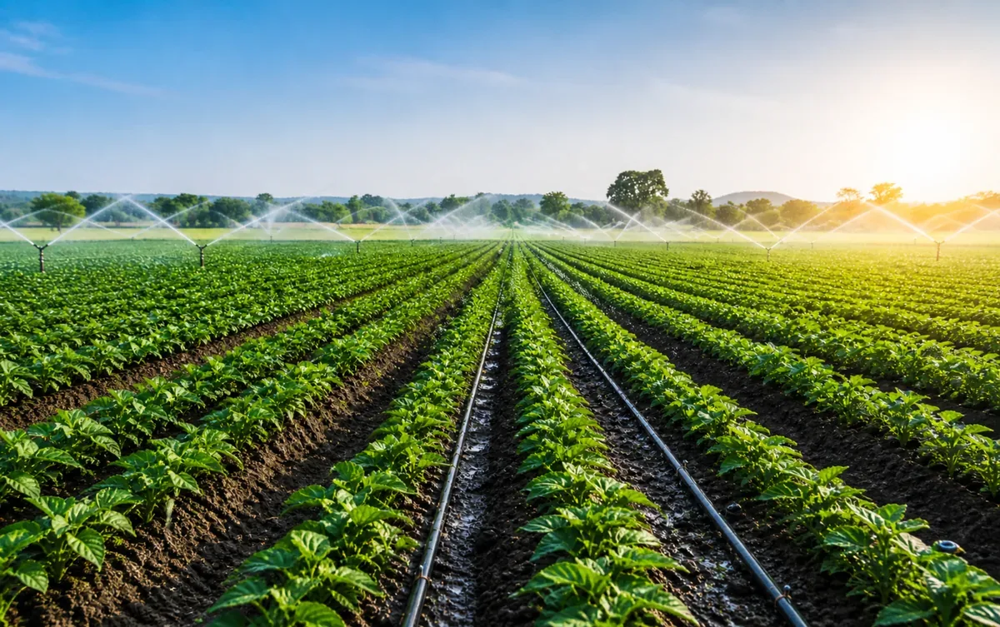
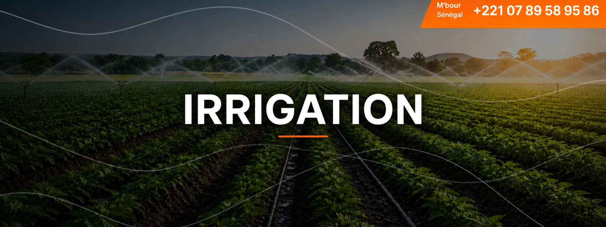
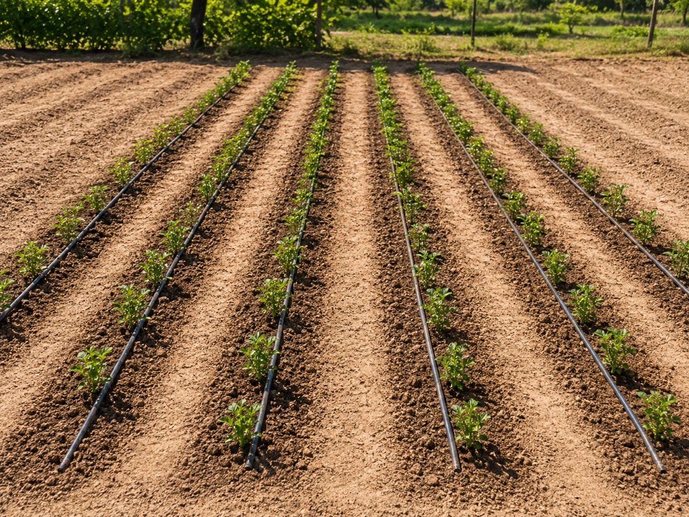
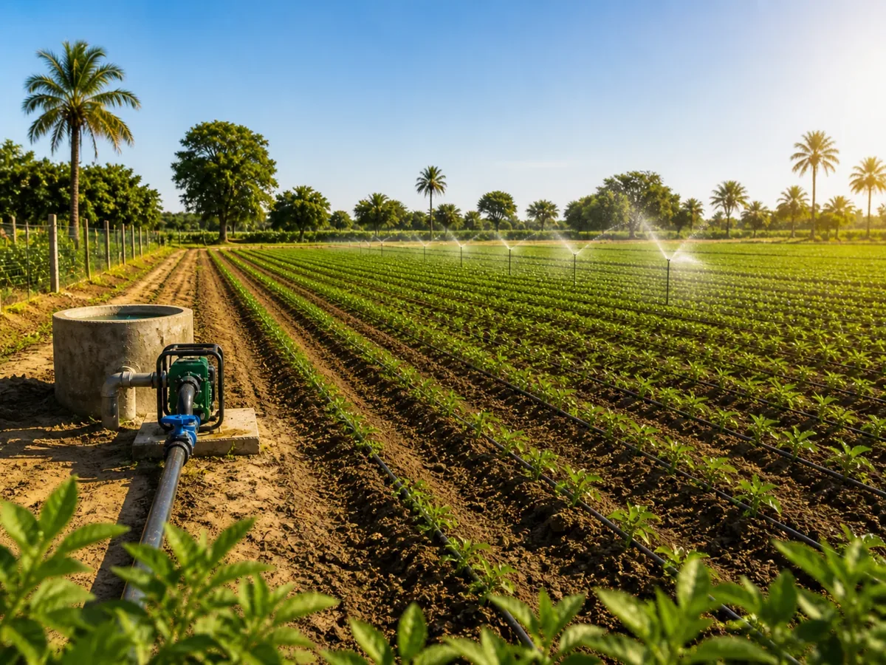

Irrigation agricole
Réseaux conçus pour mieux répartir l’eau sur les cultures.

Au Sénégal, l’agriculture et les espaces verts dépendent fortement d’une gestion maîtrisée de l’eau. Dans un contexte marqué par la variabilité climatique, les coupures d’approvisionnement et la pression croissante sur la ressource, une irrigation mal adaptée peut entraîner des pertes de rendement, un gaspillage d’eau et une dégradation des sols.
HYDREAUPRO propose des solutions d’irrigation fiables, performantes et durables, garantissant une distribution optimale de l’eau, en quantité et en pression, au service de la production agricole et des aménagements paysagers.
Quelques exemples de solutions d’irrigation, de pompage et de gestion de l’eau agricole.

Réseaux conçus pour mieux répartir l’eau sur les cultures.

Solutions adaptées aux contraintes de terrain et de disponibilité de l’eau.

Équipements permettant d’assurer la continuité de l’irrigation.
Nos solutions peuvent être adaptées aux petites exploitations, périmètres maraîchers, vergers, jardins, espaces verts et projets agricoles plus structurés.
Systèmes adaptés aux cultures, aux surfaces et aux objectifs de production.
Solutions pensées pour optimiser l’apport en eau et limiter les pertes.
Installations dimensionnées pour une irrigation régulière et maîtrisée.
Accompagnement technique pour des installations durables et performantes.
Contactez-nous et nos équipes vous répondront dans les plus brefs délais.